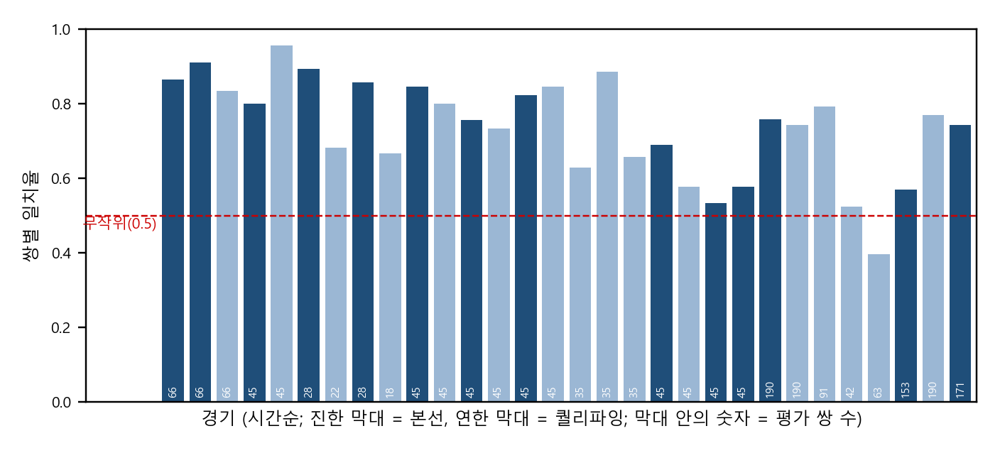

Disclaimer. 본 노트는 AI가 필자의 블로그 글 [6]과 레이팅 계산 코드를 바탕으로 작성한 것이며, 필자(OrbitHv)는 틀린 내용이 없는지 정도만 확인했다. 따라서 오류가 남아 있을 수 있다.
초록. 치레동(치지직 레이싱 동아리) 대회는 퀄리파잉(개인 기록)과 본선(팀 레이스)으로 구성되어 개인 순위와 팀 순위가 함께 산출된다. 기존의 티어 지수·랭킹 지수는 상대의 강도, 표본 수에 따른 신뢰도, 팀전 결과의 반영 면에서 한계가 있었다. 본 노트는 TrueSkill을 기반으로 선수의 실력을 정규분포 N(μ, σ²)로 추정하고 보수적 지표 μ − 3σ를 공개하는 방법을 기술한다. 핵심 변형은 개인 순위로 갱신한 결과, 팀 순위로 갱신한 결과, 사전분포를 정밀도(1/σ²) 가중으로 선형 결합하는 것이며, 이는 가능도에 지수를 부여하는 power likelihood와 같은 형태로 해석된다. 1~4회 대회의 370건의 선수별 경기 기록(선수 52명)에 적용하여, 엔트리 직전 레이팅으로 같은 경기에 참가한 두 선수의 순위 순서를 맞힌 비율이 73.4%, 팀전에서는 몬테카를로 시뮬레이션으로 팀 쌍의 점수 순서를 맞힌 비율이 68.0%였다. 다만 팀 쌍은 표본이 작아 무작위와 구분되지 않았고, 간단한 기준선(이전 평균 순위)과도 순서 예측 성능의 차이를 구분할 수 없었다.
주제어: 레이팅 시스템, TrueSkill, 베이지안 추론, 팀 경기, 레이싱
Abstract. The Chzzk Racing Club (치레동) tournaments combine individual qualifying sessions with team races, yielding both individual and team rankings. We describe a rating method built on TrueSkill, in which each player's skill is modelled as N(μ, σ²) and the conservative value μ − 3σ is published. The main modification linearly combines, in precision (1/σ²) form, the posterior obtained from individual placements, the posterior obtained from team placements, and the prior; this is equivalent to a power-likelihood weighting. Applied to 370 player-level race records of 52 players across four tournaments, pre-match ratings ordered 73.4% of player pairs within a race and, via Monte Carlo simulation, 68.0% of team pairs. However, the team-pair result was statistically indistinguishable from chance, and the ranking accuracy was not distinguishable from a simple baseline (mean past rank).
Keywords: rating system, TrueSkill, Bayesian inference, team games, racing
치레동은 치지직 스트리머들이 참여하는 레이싱 게임 대회로, 지금까지 네 차례 열렸다. 대회는 단계(엔트리)마다 퀄리파잉과 본선으로 나뉜다. 퀄리파잉은 개인 기록(랩 타임)으로 순위를 정하는 다자 개인전이고, 본선은 팀을 이루어 달리며 순위별 점수를 합산해 팀 순위를 정한다. 따라서 한 대회에서 개인 순위와 팀 순위가 동시에 관측된다(대회 기록은 치레동 대시보드 [5]에 공개되어 있다). 4회(포뮬러 챔피언쉽)는 20명이 경주하고 순위별로 24점, 22점, 20점, 18점, 16점, 15점, 14점으로 이어져 20위에게 1점까지 차등 배점하는 형식이며, 결승은 배점이 1.5배다. 또한 패스티스트 랩을 기록한 선수에게 1점, 순위 상승폭이 가장 큰 선수에게 2점(상승폭이 같으면 최종 순위가 높은 선수)의 보너스 점수가 주어진다.
기존에는 특정 대회의 성적을 나타내는 티어 지수와 전체 대회를 통틀어 평가하는 랭킹 지수를 사용했다. 티어 지수는 대회가 끝난 뒤 (퀄리파잉 순위 합 × 0.3 + 본선 순위 합 × 0.7) / (라운드 수)로 정리하고, 랭킹 지수는 대회별 티어 지수를 각각 최댓값이 10이 되도록 정규화한 뒤 평균하여 구한다. 1~3회 대회에서는 쓸 만했으나 4회 대회에는 잘 적용되지 않았다. 이 지표들에는 다음 한계가 있었다. (1) 상대의 강도를 반영하지 못한다. 약한 상대를 이긴 결과와 강한 상대를 이긴 결과가 같은 값을 준다. (2) 표본 수에 따른 신뢰도를 반영하지 못한다. 한 번 출전한 선수와 여러 번 출전한 선수가 같은 척도에서 비교된다. (3) 팀 결과와 개인 결과를 하나의 값으로 통합하지 못한다.
본 노트의 목표는 이 세 가지를 만족하는 단일 지표를 제시하고, 그 계산 방법을 재현 가능한 수준으로 기술하는 것이다. 이 레이팅은 개인이 집계하는 참고용 값이며 대회의 공식 지표가 아니다.
TrueSkill [1]은 각 선수의 실력을 정규분포 N(μ, σ²)로 두고, 한 경기에서 선수의 성과를 N(실력, β²)로 모델링한다. 경기 결과(순위)가 주어지면 팩터 그래프 위의 메시지 전달로 사후분포를 근사하여 μ와 σ를 갱신한다. 경기마다 σ²에 동적 계수 τ²가 더해져, 시간이 지나도 불확실성이 0으로 수렴하지 않는다.
Elo [2]나 Glicko [3] 대신 TrueSkill을 택한 이유는 세 가지다. 첫째, 다자 경기의 순위를 그대로 입력으로 받는다. 둘째, 팀 성과를 구성원 성과의 합으로 모델링하므로 팀 순위로 개인 실력을 갱신할 수 있다. 셋째, 불확실성 σ를 명시적으로 추적하므로 신뢰도를 지표에 반영할 수 있다.
초기값은 μ0 = 50, σ0 = 50/3이다. 공개 지표는 다음과 같이 정의한다.
R은 실력의 하한(정규분포에서 약 99.9% 신뢰)으로 읽을 수 있으며, 초기값은 0이다. 평균이 같아도 불확실성이 큰 선수는 R이 낮다.
한 엔트리에 참가한 모든 선수에 대해, 엔트리 직전의 분포(이하 μpre, σpre)에서 출발하여 두 번의 갱신을 독립적으로 수행한다.
개인 갱신. 모든 선수를 1인 팀으로 보고 개인 순위로 갱신하여 (μI, σI)를 얻는다. 순위는 레이팅용 순위가 지정되어 있으면 그 값을, 없으면 실제 순위를 쓴다(3.5절).
팀 갱신. 팀 점수는 구성원 점수의 합으로 정하고, 동점이면 팀 내 최고 개인 점수가 높은 팀이 앞선다. 이 팀 순위로 갱신하여 (μT, σT)를 얻는다. 3·4회는 동점을 무승부(동순위)로 처리한다. 퀄리파잉과 개인전 본선은 팀 갱신이 의미가 없으므로 개인 갱신만 사용한다.
분산의 역수인 정밀도를 λ = σ−2로 쓴다. 사전분포를 (μpre, λpre)라 하고 두 가지 계수를 둔다. w는 팀 갱신의 비중(개인 갱신은 1−w), f는 해당 경기의 반영 강도(사전분포는 1−f)이다. 먼저 개인과 팀 갱신을 혼합한다.
다음으로 사전분포와 혼합한다.
두 식을 합치면 사전분포, 개인 갱신, 팀 갱신의 정밀도 가중 선형 결합이 된다.
여기서 (a0, aI, aT) = (1−f, f(1−w), f w)이고 합은 1이다. 최종 σnew = λnew−1/2이다. 평균이 단순한 변화량의 가중평균이 아니라 정밀도로 한 번 더 가중된다는 점이 중요하다. 정밀도 λ가 큰 갱신, 곧 σ가 작은 쪽이 평균에 더 크게 반영된다. 경기 유형별 계수는 표 1과 같다.
| 경기 유형 | f | w | a0 / aI / aT |
|---|---|---|---|
| 퀄리파잉 | 0.43 | 0 | 0.57 / 0.43 / 0 |
| 본선 (개인전) | 1 | 0 | 0 / 1 / 0 |
| 본선 (팀전) | 1 | 0.3 | 0 / 0.7 / 0.3 |
※ 두 값은 기존 랭킹 지수가 퀄리파잉과 본선을 3 : 7로 반영하던 것에서 착안했다. 본선을 f = 1로 두면 퀄리파잉은 3/7 ≈ 0.43이고, 팀전의 개인 : 팀 비중은 7 : 3, 즉 w = 0.3이다. 데이터로 추정하거나 검증한 값이 아니며 6.2절에서 민감도만 확인했다.
TrueSkill 기본값(μ0 = 25 등)을 2배 스케일로 올려, 상한 기준값 M = 100에서 파라미터를 다음과 같이 둔다(표 2). 기본 TrueSkill과 마찬가지로 β = σ0/2, τ = σ0/100의 비율이다.
| 기호 | 의미 | 값 |
|---|---|---|
| μ0 | 초기 평균 | M/2 = 50 |
| σ0 | 초기 표준편차 | M/6 ≈ 16.67 |
| β | 성과 표준편차 | M/12 ≈ 8.33 |
| τ | 동적 계수 | M/600 ≈ 0.167 |
| — | 무승부 확률 | 0 |
조별 예선의 통합 순위. 예선이 여러 조로 나뉘어 치러지는 엔트리가 있다. 이때 조별 순위는 서로 다른 조의 선수를 비교할 수 없으므로, 모든 조의 기록을 랩 타임으로 한데 모아 매긴 통합 순위를 레이팅용 순위로 쓰고, 한 엔트리의 모든 선수를 이 순위로 한 번에 갱신한다. 2~4회 전체 370건 중 72건(2회 예선 16건, 3회 예선 30건, 4회 두 번째 예선 26건)이 이에 해당하며, 모두 랩 타임 순서와 일치함을 확인했다. 조 안의 실제 순위는 그대로 기록하고 레이팅 계산에만 통합 순위를 사용한다.
완주하지 못한 기록. 완주하지 못한 기록(DNF)은 18건이다. 순위가 기록된 DNF는 그 순위를 그대로 쓰고, 순위가 기록되지 않은 3건(4회 본선)은 6.1절의 평가에서 제외하며 레이팅 재계산(6.2절)에서는 최하위로 두었다.
동점과 보너스. 3·4회의 팀 순위에는 동점을 동순위로 처리하는 방식을 사용하고, 무승부 확률은 0으로 두어 동순위 자체가 정보가 되도록 한다. 4회 본선에는 패스티스트 랩 1점, 순위 상승폭 최대 선수 2점의 보너스가 있으며 실제로 5건이 부여되었다. 레이팅 계산의 팀 점수에는 이를 반영하지 않고 순위에 따른 점수만 사용한다.
데이터는 1~4회 대회의 경기 기록이다. 엔트리는 레이팅을 한 번 갱신하는 단위(대회의 단계)이며 초기값 엔트리를 제외하면 27개다. 한 엔트리는 하나 이상의 경기 기록으로 이루어지고(예: 예선이 여러 조로 나뉜 경우), 경기 기록 한 건은 하나의 레이스 또는 퀄리파잉 세션 묶음이다. 선수-경기 건수는 경기 기록마다 참가 선수를 센 합이다.
| 대회 | 엔트리 | 경기 기록 | 참가 선수 | 선수-경기 건수 |
|---|---|---|---|---|
| 1회 | 4 | 4 | 12 | 48 |
| 2회 | 11 | 12 | 20 | 112 |
| 3회 | 5 | 7 | 30 | 70 |
| 4회 | 7 | 8 | 40 | 140 |
| 합계 | 27 | 31 | (중복 제외) 52 | 370 |
※ 경기 기록에 등장하는 선수는 중복을 제외하고 52명이며, 4회 참가자는 40명이다.
식 (1)에 따라 평균이 같아도 갱신 횟수가 다르면 R은 달라진다. 이는 R의 정의에서 나오는 결과이며 모형을 검증하는 것은 아니다. 4회 종료 시점에서 경기 기록이 한 번이라도 있는 선수 52명 중 μ의 차이가 1 미만이고 갱신 횟수가 5회 이상 차이 나는 쌍은 35쌍이며, 이 모두에서 갱신 횟수가 많은 쪽의 R이 높았다. R의 차이는 평균 14.1점(2.3~23.9점)이다. 같은 선수가 여러 쌍에 쓰였으므로 쌍들은 독립이 아니다. 표 4는 이 중 두 쌍의 예이다(갱신 횟수가 많은 쪽이 각각 23.9점, 19.8점 높다).
| 쌍 | 갱신 횟수 | μ | σ | R |
|---|---|---|---|---|
| A | 16 | 57.56 | 3.19 | 47.98 |
| 1 | 56.63 | 10.85 | 24.06 | |
| B | 9 | 43.15 | 4.00 | 31.15 |
| 1 | 43.05 | 10.57 | 11.33 |
보수적 지표의 목적은 적게 출전한 선수의 우연한 호성적이 순위를 높이지 않게 하는 데 있다. 다만 이 효과를 예측 성능으로 확인하지는 못했다. 6.1.3절에서 R을 평균으로 쓴 예측은 μ보다 개인 쌍의 로그 손실에서 나빴고 팀 쌍에서는 구분되지 않았다. 결과의 확실성이 높은 선수를 우대하는 보수적 설계이므로, 신규 참가자의 레이팅은 실제 실력보다 낮게 표시되는 경향이 있다.
전체 및 엔트리별 레이팅 순위, 선수별 레이팅 변화 그래프, 대회와 경기별 결과는 치레동 레이팅 대시보드 [5]에서 볼 수 있으므로 본 노트에는 싣지 않았다. 대시보드는 베타 버전이며 계속 갱신된다.
엔트리 직전의 레이팅으로 그 엔트리의 경기 결과를 예측해 평가한다(한 엔트리의 여러 경기 기록은 같은 사전 레이팅을 쓴다). 해당 경기 결과에 대해서는 표본 밖 평가이다. 성과 모델은 TrueSkill의 기본 모델, 곧 선수의 성과를 N(μ, σ²+β²)에서 추출하는 것으로 둔다. 순서를 맞힌 비율(일치율)과 함께, 예측 확률의 Brier 점수와 로그 손실을 본다. β는 표 2의 값(8.33)을 쓰고, 로그 손실은 확률을 0.01~0.99로 제한해 계산한다. 항상 0.5로 예측하면 Brier 점수는 0.250, 로그 손실은 0.693이며 둘 다 낮을수록 좋다. 성과 모델을 다르게 둔 경우와의 비교는 6.1.3절에서 다룬다.
한 경기(레이스 또는 퀄리파잉 세션)에 참가한 선수 중 순위가 다른 모든 쌍에 대해, 엔트리 직전 μ가 높은 쪽이 실제로 더 높은 순위였던 비율을 구했다(무작위 기준 0.5). 순위가 다른 2192쌍 중, 모든 선수가 초기값이라 지표가 같은 1회 첫 퀄리파잉의 66쌍과 사전 μ가 같은 97쌍을 제외한 30개 경기 2029쌍에서 73.4%(1490쌍)였다(그림 1).

이를 맞음/틀림이 아니라 확률로도 평가했다. 선수 A가 B보다 앞설 확률은 몬테카를로 시뮬레이션의 극한인 Φ((μA−μB) / √(σA²+σB²+2β²))로 직접 계산된다. 이 확률을 실제 결과(A가 앞서면 1)와 비교하면 Brier 점수 0.183, 로그 손실 0.557이다. 표 5는 예측 확률별 실제 적중률이다.
| 예측 확률 구간 | 쌍 수 | 평균 예측 확률 | 실제 적중률 |
|---|---|---|---|
| 0.5~0.6 | 321 | 0.555 | 0.555 |
| 0.6~0.7 | 337 | 0.652 | 0.611 |
| 0.7~0.8 | 361 | 0.747 | 0.695 |
| 0.8~0.9 | 371 | 0.849 | 0.776 |
| 0.9~1.0 | 639 | 0.964 | 0.886 |
확률이 0.6을 넘는 구간에서 실제 적중률이 예측보다 낮아 다소 과신하는 경향이 있다. 0.9 이상으로 예측한 쌍은 약 89%가 맞았다. 원인은 분석하지 않았으며, 쌍이 독립이 아니므로 구간별 값의 불확실성도 크다.
팀전 본선에서는 순위에 따라 팀에 기여하는 점수가 다르다(예: 4회는 1위 24점, 2위 22점, 3위 20점으로 이어지며, 대회와 경기마다 배점표가 다르다). 따라서 팀원의 실력을 단순히 합해서는 팀 점수를 알 수 없고, 몬테카를로 시뮬레이션을 쓴다. 엔트리 직전 분포에서 각 선수의 성과를 추출하고, 추출한 성과의 순위에 배점표를 적용해 팀별로 점수를 합산하는 과정을 200,000회 반복한다. 팀 A가 팀 B보다 높은 점수를 낼 비율(동점은 반반)이 0.5를 넘으면 A를 승자로 예측한다. 실제 점수는 순위 점수에 보너스 점수를 더해 계산했고, 점수가 다른 팀 쌍 175쌍(팀전 본선 12경기, 이 중 4회 본선이 131쌍)을 평가했다. 일치율은 68.0%(119쌍), Brier 점수는 0.193, 로그 손실은 0.561이다. 표 6은 예측 확률별 실제 적중률이다.
| 예측 확률 구간 | 팀 쌍 수 | 평균 예측 확률 | 실제 적중률 |
|---|---|---|---|
| 0.5~0.6 | 36 | 0.551 | 0.444 |
| 0.6~0.7 | 35 | 0.646 | 0.571 |
| 0.7~0.8 | 34 | 0.744 | 0.735 |
| 0.8~0.9 | 39 | 0.852 | 0.718 |
| 0.9~1.0 | 31 | 0.958 | 0.968 |
0.9 미만의 모든 구간에서 실제 적중률이 예측 확률보다 낮지만 0.9 이상 구간에서는 오히려 높아, 개인 쌍과 달리 과신이 일관되게 나타나지 않는다. 다만 구간당 쌍이 31~39개이고 쌍들이 독립이 아니며 4회 본선이 대부분이어서, 구간별 값은 우연에 의한 변동이 크다.
위의 결과가 성과 모델의 선택에 얼마나 좌우되는지 보기 위해 대안과 비교했다. 하나는 β를 생략하고 N(μ, σ²)에서 추출하는 것이고, 다른 하나는 평균에 보수적 지표를 써서 N(R, σ²+β²)에서 추출하는 것이다. 후자에서 β도 생략한 N(R, σ²)도 함께 둔다. 표 7은 같은 쌍에서의 결과이다.
| 성과의 분포 | 개인 쌍 (2029쌍) | 팀 쌍 (175쌍) | ||||
|---|---|---|---|---|---|---|
| 일치율 | Brier | 로그 손실 | 일치율 | Brier | 로그 손실 | |
| N(μ, σ²+β²) (기본) | 73.4% | 0.183 | 0.557 | 68.0% | 0.193 | 0.561 |
| N(μ, σ²) | 73.4% | 0.197 | 0.657 | 67.4% | 0.212 | 0.665 |
| N(R, σ²+β²) | 72.6% | 0.195 | 0.608 | 72.0% | 0.186 | 0.552 |
| N(R, σ²) | 72.6% | 0.210 | 0.725 | 73.1% | 0.200 | 0.643 |
| (참고) 팀원 μ 합의 비교 | — | — | — | 69.1% | — | — |
| (참고) 팀원 R 합의 비교 | — | — | — | 69.7% | — | — |
| 무작위 | 50% | 0.250 | 0.693 | 50% | 0.250 | 0.693 |
β를 생략해도 개인 쌍의 일치율은 같고 확률 점수만 나빠진다. 평균에 R을 쓰면 개인 쌍의 일치율은 낮아지고, 팀 쌍의 일치율은 높아졌다. β를 생략한 N(R, σ²)는 위치와 β가 동시에 바뀌므로, 위치만의 효과는 β를 포함한 N(R, σ²+β²)와 기본 모델을 비교해야 한다. 팀원의 μ 또는 R을 단순히 합해 비교한 결과(69.1%, 69.7%)와 시뮬레이션 결과(67.4%~73.1%)도 큰 차이가 없어, 순위별 기여를 반영한 시뮬레이션이 단순한 합보다 낫다는 증거는 이 표본에서 얻지 못했다.
이 차이가 우연인지 보기 위해 경기 단위 군집 부트스트랩을 했다. 같은 경기의 쌍은 한 묶음으로 두고 경기를 복원추출하여 5,000번 다시 계산했으며, 구간은 95% 백분위 구간이다. 개인 쌍은 30경기, 팀 쌍은 점수 차가 있는 쌍이 있는 11경기가 묶음이다. 표 8은 기본 모델과 다른 모델의 점수 차이(앞의 분포 − 뒤의 분포, 음수면 앞이 낫다)와 기본 모델의 점수 자체이다.
| 비교 | 개인 Brier | 개인 로그 손실 | 팀 Brier | 팀 로그 손실 |
|---|---|---|---|---|
| N(μ, σ²+β²) − N(μ, σ²) | −0.015 [−0.020, −0.008] | −0.100 [−0.139, −0.054] | −0.020 [−0.040, −0.004] | −0.104 [−0.213, −0.007] |
| N(R, σ²+β²) − N(μ, σ²+β²) | +0.013 [−0.002, 0.028] | +0.051 [0.009, 0.096] | −0.006 [−0.023, 0.011] | −0.009 [−0.044, 0.029] |
| N(μ, σ²+β²) 자체 (무작위: 0.250 / 0.693) | 0.183 [0.156, 0.212] | 0.557 [0.473, 0.651] | 0.193 [0.150, 0.272] | 0.561 [0.456, 0.752] |
β를 더하면 개인·팀 모두 두 점수가 일관되게 좋아졌고 구간이 0을 포함하지 않는다. 같은 β를 포함한 상태에서 평균을 R로 바꾸면 개인 쌍의 로그 손실만 구분되게 나빠졌고, 나머지는 구간이 0을 포함하여 구분되지 않는다. 팀 쌍에서 R 기준의 일치율이 높게 나온 것도 우연의 범위로 볼 수 있다. 무작위와의 비교는 개인 쌍과 팀 쌍이 다르다. 개인 쌍은 두 점수 모두 구간 전체가 무작위 값(0.250, 0.693) 아래에 있어 무작위보다 낫다는 점이 뒷받침된다. 팀 쌍은 두 점수 모두 구간이 무작위 값을 포함하여 구분되지 않는다.
일치율 자체의 불확실성도 같은 방법으로 구했다. 기본 모델의 일치율은 개인 쌍 73.4%(95% 구간 68.8~77.5%), 팀 쌍 68.0%(47.2~76.9%)이다. 팀 쌍의 구간은 무작위 기준 50%를 포함하므로, 팀 쌍에서 무작위보다 낫다고 말하기 어렵다. 이 구간들에도 한계가 있다. 팀 쌍은 묶음이 11개뿐이라 구간이 불안정하고, 같은 선수가 여러 경기에 나오는 의존성은 경기 단위 묶음으로 다 반영되지 않으며, 몬테카를로 시뮬레이션 자체의 오차는 포함하지 않았다. 시뮬레이션 횟수를 200,000회로 늘려 이 오차를 줄였다(40,000회에서는 시드에 따라 팀 쌍 일치율이 1~2쌍, 약 1%p 달라졌다).
마지막으로 간단한 기준선과 비교했다. 기준선은 각 선수의 이전 엔트리들에서의 순위 백분위, 곧 (순위−1)/(참가자 수−1)(낮을수록 좋음)의 평균을 구해 이 값이 낮은 쪽이 앞선다고 예측한다. 이전 기록이 없는 선수가 있거나 두 값이 같으면 동전 던지기(0.5점)로 처리하고, 순위가 기록되지 않은 기록은 이력에서 뺐다. 팀 쌍은 팀원의 이 값의 평균(이력이 없는 선수는 0.5)이 낮은 팀이 앞선다고 예측한다. 개인 쌍 2029쌍 전체에서 기준선은 72.1%, μ는 73.4%였고 차이는 1.3%p(95% 구간 −0.2~2.9%p)이다. 두 선수 모두 이력이 있는 1832쌍에서는 74.5% 대 74.9%로 차이가 0.4%p(−1.0~1.6%p)이다. 팀 쌍 175쌍에서는 기준선이 66.9%(95% 구간 55.4~74.5%), 기본 모델이 68.0%이다. 어느 비교에서도 차이를 구분할 수 없으므로 본 방법이 이 정도의 단순 기준선보다 순서 예측에서 우위가 있다고 말할 수 없다. 본 방법의 장점은 순서 예측의 정확도보다 불확실성의 표현과 상대 강도의 반영에 있으며, 이는 이 평가로 확인되지 않는다.
일치율은 경기마다 편차가 크다(개인 순서 약 40%~96%). 같은 선수 구성이 반복되는 2회 후반은 높고, 신규 참가자가 많은 3회 이후 일부 경기는 무작위에 가깝다. 한 경기 안에서 같은 선수가 여러 쌍에 반복해 쓰이므로 쌍 단위의 독립성을 가정하는 신뢰구간은 쓸 수 없고, 특히 6.1.2절의 평가는 표본이 작고 4회 본선에 치우쳐 있어 해석에 주의가 필요하다. 또한 본 노트는 기존 티어 지수·랭킹 지수와의 비교를 하지 못했다. 1.2절의 정의로 계산할 수 있어 보이지만 본선 순위의 기준(개인 순위인지 팀 순위인지)과 라운드 수의 세는 방법 등 세부 정의가 확정되지 않아 재현하지 못했으며, 따라서 위 일치율이 기존 지표보다 높은지는 알 수 없다. 개인 쌍과 팀 쌍의 확률 보정을 위에서 평가했으나, 팀 쌍은 표본이 작아 보정이 정확한지 판단하기 어렵다.
퀄리파잉 반영 강도 0.43과 팀 비중 0.3은 기존 랭킹 지수의 3 : 7 비율에서 가져온 값이며(3.3절), 데이터에서 추정한 값이 아니다. 이 값들이 결과에 얼마나 영향을 주는지 보기 위해, 1~4회 전체 엔트리를 처음부터 다시 계산하며 f(퀄리파잉)와 w(본선 팀전)를 바꾸어 보았다. 현재 값(f = 0.43, w = 0.3)으로 재계산한 결과는 최종 μ가 저장된 이력과 최대 0.2 이내로 일치하며(엔트리별로는 한 선수의 4개 엔트리에서 0.2를 넘고 최대 0.45, σ는 최대 0.006 차이이다. 원인으로 순위가 기록되지 않은 기록의 처리 차이를 생각할 수 있으나 확인하지 못했다), 6.1.1절과 같은 2029쌍에서 일치율이 μ 기준 73.4%, R 기준 72.6%로 재현된다. 표 9는 f와 w의 조합별 일치율(μ / R 기준, %)이다.
| f \ w | 0 | 0.15 | 0.3 | 0.5 |
|---|---|---|---|---|
| 0.2 | 72.3 / 70.5 | 72.8 / 70.7 | 72.9 / 71.1 | 72.8 / 71.5 |
| 0.43 | 73.8 / 72.2 | 73.6 / 72.3 | 73.4 / 72.6 | 73.5 / 72.8 |
| 0.7 | 74.0 / 72.7 | 73.8 / 72.8 | 73.8 / 73.0 | 73.8 / 73.4 |
| 1.0 | 73.8 / 73.0 | 73.7 / 72.9 | 73.7 / 73.1 | 73.7 / 73.8 |
16개 조합에서 μ 기준 일치율은 72.3%~74.0%로 1.7%p 범위에 있고, f = 0.2에서만 눈에 띄게 낮다. 현재 값(f = 0.43, w = 0.3)은 f ≥ 0.43인 조합보다 μ 기준으로 최대 0.6%p 낮지만, 6.1.4절에서 설명한 것처럼 쌍들이 독립이 아니므로 이 정도 차이가 우연한 변동보다 크다고 볼 근거는 없다. 최종 레이팅 R의 순위는 현재 값과의 스피어만 상관이 모든 조합에서 0.98 이상이며, 상위 10명은 16개 조합 중 13개에서 현재 값과 같았고 3개에서 9명이 같았다. 즉 이 데이터에서는 f와 w를 합리적 범위에서 바꿔도 순위와 개인 순서 예측 성능은 크게 달라지지 않았다. 다만 이는 값이 옳다는 근거가 아니라 결과가 둔감하다는 관찰이며, 값을 데이터로 추정하지는 않았다. 이 분석은 개인 순서 예측의 일치율만 비교했다.
확률 평가와 팀 승패 예측에 대한 민감도는 따로 보았다. 표 10은 기본 값(f = 0.43, w = 0.3)에서 한 축만 바꾼 7개 조합을 다시 계산하여 6.1절의 기본 모델로 평가한 결과이고(팀 쌍은 시뮬레이션 200,000회), 표 11은 기본 값과의 점수 차이를 6.1.3절과 같은 경기 단위 부트스트랩으로 구한 것이다.
| f | w | 개인 쌍 | 팀 쌍 |
|---|---|---|---|
| 0.43 | 0 | 73.8% / 0.185 / 0.566 | 67.4% / 0.198 / 0.578 |
| 0.43 | 0.15 | 73.6% / 0.184 / 0.561 | 68.6% / 0.195 / 0.569 |
| 0.43 | 0.3 | 73.4% / 0.183 / 0.557 | 68.0% / 0.193 / 0.561 |
| 0.43 | 0.5 | 73.5% / 0.182 / 0.552 | 68.0% / 0.189 / 0.551 |
| 0.2 | 0.3 | 72.9% / 0.187 / 0.564 | 69.1% / 0.191 / 0.555 |
| 0.7 | 0.3 | 73.8% / 0.181 / 0.558 | 68.6% / 0.197 / 0.573 |
| 1.0 | 0.3 | 73.7% / 0.181 / 0.563 | 67.4% / 0.201 / 0.587 |
| 변경 | 개인 Brier | 개인 로그 손실 | 팀 Brier | 팀 로그 손실 |
|---|---|---|---|---|
| w = 0 | +0.002 [0.001, 0.004] | +0.009 [0.004, 0.016] | +0.006 [0.000, 0.012] | +0.017 [0.001, 0.039] |
| w = 0.5 | −0.001 [−0.002, 0.000] | −0.005 [−0.010, −0.001] | −0.003 [−0.009, 0.001] | −0.010 [−0.025, 0.002] |
| f = 0.2 | +0.005 [0.001, 0.009] | +0.008 [−0.005, 0.022] | −0.002 [−0.008, 0.007] | −0.006 [−0.022, 0.015] |
| f = 1.0 | −0.001 [−0.006, 0.002] | +0.006 [−0.011, 0.020] | +0.008 [−0.001, 0.014] | +0.026 [−0.001, 0.044] |
w = 0과 비교하면 기본 값(w = 0.3)에서 네 점수가 모두 낮아졌고 구간이 0을 거의 벗어난다(팀 Brier의 하한은 0.000). 즉 팀 갱신을 넣으면 확률 점수가 소폭 좋아진다는 근거가 있다. 그러나 크기가 작아 개인 Brier 0.002, 팀 Brier 0.006 정도이다. w = 0.5는 개인 쌍에서 기본 값보다 근소하게 낫고 팀 쌍에서는 구분되지 않으므로, w = 0.3이 적절하다는 근거는 없다. f는 개인 쌍에서 0.2가 나쁘고 팀 쌍에서는 1.0이 나쁜 경향이 있어 방향이 엇갈리며, 대부분의 구간이 0을 포함한다. 한편 w가 클수록 팀 점수를 기준으로 한 평가가 유리해지는 것은 자연스러운 결과일 수도 있다. 일치율은 개인 쌍 72.9~73.8%, 팀 쌍 67.4~69.1%로 조합에 따라 크게 달라지지 않았다.
정확한 베이즈 갱신에서 사후 정밀도는 사전 정밀도와 가능도의 정밀도의 합이다. 개인과 팀 갱신의 가능도 정밀도를 각각 ℓI = λI − λpre, ℓT = λT − λpre로 두면 식 (4)는 다음과 같이 쓸 수 있다.
즉 개인과 팀의 가능도를 각각 지수 f(1−w), f w로 줄여 반영하는 power likelihood(tempered likelihood)와 같은 형태이다. 개인 순위와 팀 순위는 같은 경기에서 나온 정보이므로 둘을 모두 온전히 반영하면 같은 결과를 이중으로 계산해 σ가 과도하게 줄어든다. 지수의 합을 f 이하로 제한하는 것은 이를 완화하는 장치로 볼 수 있다.
다만 이 해석은 근사에 의존한다. 첫째, TrueSkill의 갱신은 정확한 사후분포가 아니라 모멘트 매칭 근사이다. 둘째, 두 갱신에는 동적 계수 τ²가 포함되어 있지만 식 (4)의 사전분포 항에는 포함되지 않는다. 셋째, 팀 순위는 같은 레이스의 개인 순위에서 결정론적으로 정해지므로(점수 합, 동점이면 최고 개인 점수), 개인 순위를 모두 관측한 상태에서 팀 가능도는 새로운 정보를 더하지 않는다. 팀 갱신은 정보를 추가하는 것이 아니라 팀 성과를 더 중시하려는 설계 선택이며, TrueSkill의 팀 모델(팀 성과 = 구성원 성과의 합)은 실제 점수 규칙(순위별 비선형 배점)과도 다르다. 넷째, 개인 가능도와 팀 가능도는 독립이 아니며, 지수 합을 f로 두는 선택은 이론적으로 유도된 것이 아니라 휴리스틱이다. 따라서 본 방법은 정확한 사후분포라기보다, 두 신호를 합리적으로 절충하는 실용적 규칙으로 보는 것이 타당하다.
본 노트는 TrueSkill을 기반으로 팀 대회에서 개인 순위와 팀 순위를 함께 반영하는 레이팅 방법을 기술했다. 개인 갱신, 팀 갱신, 사전분포를 정밀도 가중으로 결합하는 규칙은 가능도를 지수로 조절하는 형태로 해석되며, 엔트리 직전 레이팅은 같은 경기 선수 쌍의 73.4%, 팀 쌍의 68.0%를 올바른 순서로 맞혔다. 다만 팀 쌍은 무작위와 구분되지 않았고, 간단한 기준선(이전 평균 순위)과도 순서 예측 성능의 차이를 구분할 수 없었다. 계수 f, w를 바꾸어도 순위와 순서 예측 성능은 크게 달라지지 않았고, 팀 갱신은 확률 점수를 소폭 개선했다(6.2절). 공개 지표 R은 예측 지표가 아니라 보수적 표시 지표이며, μ보다 순서 예측이 나빴다(개인 쌍의 로그 손실에서 구분됨). 한계로 계수의 근거 부족, 신규 참가자 레이팅의 보수성, 기존 지표와의 비교 부재, 팀 확률 보정의 불확실한 평가, 개인 쌍 확률의 다소 과신하는 경향을 들 수 있다. 향후에는 (1) 계수 f, w의 데이터 기반 추정, (2) 기존 티어·랭킹 지수와의 비교, (3) 표본 확대 후의 팀 승리 확률 보정 평가와 확률의 과신 교정을 진행할 계획이다.
| 기호 | 의미 |
|---|---|
| μ, σ | 실력의 평균, 표준편차 |
| λ = σ−2 | 정밀도 |
| β | 성과의 표준편차 |
| τ | 동적 계수 (갱신마다 σ²에 τ² 가산) |
| (μI, σI), (μT, σT) | 개인 갱신, 팀 갱신 결과 |
| w, f | 팀 비중, 반영 강도 |
| a0, aI, aT | 사전·개인·팀 결합 계수 |
| R | 레이팅 μ − 3σ |
식 (4)를 확률밀도함수(PDF)에서 출발하여 유도한다. 실력 x에 대한 모든 분포를 정규분포로 근사하며, 정규분포의 PDF는 상수배를 무시하면 다음과 같다.
따라서 정규분포는 지수부의 두 계수, 곧 정밀도 λ와 정밀도×평균 λμ로 완전히 결정된다. 이 두 값을 자연 모수라 부르자.
B.1 곱과 거듭제곱. 두 정규분포의 곱은 지수부의 계수가 더해진다. 정규분포 N(x; μ1, λ1)과 N(x; μ2, λ2)에 대해
이므로 곱의 정밀도는 λ1+λ2, 평균은 (λ1μ1+λ2μ2)/(λ1+λ2)이다. 같은 이유로 분포를 a제곱하면 두 계수가 모두 a배가 되어 정밀도는 aλ, 평균은 그대로인 정규분포가 된다. 나눗셈도 계수의 뺄셈으로 처리된다.
B.2 갱신을 가능도로 환원. 사전분포 ppre = N(μpre, λpre)에 개인 순위를 반영한 사후분포를 pI = N(μI, λI)라 하면, 베이즈 정리 pI ∝ ppre·LI에서 가능도는 LI ∝ pI/ppre이다. B.1에 따라 이 가능도는 정규 모양이며 자연 모수는 다음과 같다. 팀 갱신의 가능도 LT도 같다.
여기서 mI는 가능도의 평균이다. 팀 갱신은 아래첨자 I를 T로 바꾼다.
B.3 지수를 붙인 결합. 개인·팀 가능도에 지수 f(1−w), f w를 붙여 사전분포와 곱한 것을 새 분포로 정의한다.
B.1에 의해 자연 모수가 다음과 같이 합산된다.
λpre의 계수는 1 − f(1−w) − f w = 1 − f이므로 정리하면 3.3절의 식 (4)가 된다.
B.4 단계식과의 동치. 식 (2)는 λmid = (1−w)λI + wλT, λmidμmid = (1−w)λIμI + wλTμT와 같고, 식 (3)은 λnewμnew = (1−f)λpreμpre + fλmidμmid와 같다. 앞의 두 식을 뒤의 식에 대입하면 식 (B7)과 일치한다. 즉 두 단계로 나누어 계산해도 정밀도×평균에 대한 선형 결합이라는 점에서 한 번에 계산한 것과 같다.
B.5 유의. 위 유도는 갱신 결과를 정규분포로 보고 그 자연 모수를 선형 결합한다는 것까지만 보장한다. TrueSkill의 갱신 자체가 근사이고 두 가능도가 독립이 아니라는 점은 6.3절에서 다룬 한계로 남는다.
trueskill 라이브러리 문서, https://trueskill.org.